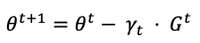

Abstract
Synchronous distributed training is a common way of distributing the training process of machine learning models with data parallelism. In synchronous training, a root aggregator node fans-out requests to many leaf nodes that work in parallel over different input data slices and return their results to the root node to aggregate. The latency of the leaf nodes greatly affects the efficiency of this architecture, and when scaling the number of parameters and data points, it can dramatically increase the training time. In this blog, I’ll explore the Synchronous Stochastic Gradient Descent (Sync-SGD) method to distribute the training process of deep learning models. I’ll focus my work on the effect of stragglers and high latency on its efficiency and research for methods and techniques to overcome those challenges.
Motivation and background
In recent years, we’ve seen the power of large-scale deep learning projects. Projects like GPT-3, its open-source version — GPT-NeoX-20B, and MT-NLG- involve model and dataset sizes that would be unfathomable only a few years ago and currently dominate the state of the art. We can see exponential growth in the complexity of the models, the number of parameters, and the size of datasets. This trend raised the demand for large-scale processing to the point where it has outpaced the increase in computation power of a single machine. The need to distribute the machine learning workload across multiple machines has been raised and led to the Synchronous Distributed Training idea.
-
Note:
There is a difference between distributed training and distributed inference. if a machine learning service receives a large number of requests, we need to distribute the model over several machines to accommodate the load. Scaling training, on the other hand, is when training the same model on more than one machine.
Synchronous stochastic gradient descent is a common way of distributing the training process of machine learning models with data parallelism. In synchronous training, a root aggregator node fans-out requests to many leaf nodes that work in parallel over different input data slices and return their results to the root node to aggregate.
Stochastic Gradient Descent
Before we dive into the implementation details and challenges, let’s first understand what stochastic gradient descent (SGD) is. Given a dataset D and a model with θ parameters, we’d like to minimize the parameterized empirical loss function, L, for a given (x,y) pairs in D, where x denotes the input sample while y is the output.
Where l is the loss of a data point (x,y) for model θ.
A first-order stochastic optimization algorithm optimizes the loss function by iteratively updating θ using a stochastic gradient. Usually, a learning rate will be applied to avoid over or underfitting, and therefore, the SGD will be calculated as follows:

where ɣ is the learning rate or step size at iteration.
A mini-batch version of the stochastic optimization algorithm computes the gradient over a mini-batch of size B instead of a single data point:

Synchronous stochastic gradient descent
Using distributed Synchronous Stochastic Gradient Descent (Sync-SGD), a root aggregator node splits the data into batches and fans-out requests to leaf nodes (worker machines) to process each batch and compute its gradient independently. Once all machines return their result, the root aggregator node averages the gradient and sends it back to the workers to update the model’s parameters. The root aggregator iterates over this process for a given number of epochs or based on a conversion condition.
FIGURE 1: DISTRIBUTED SYNCHRONOUS STOCHASTIC GRADIENT DESCENT FLOW, Image by author
Issues
In theory, distributing the computation onto T worker machines should give a performance improvement of xT. Yet, in reality, the performance improvement is rarely xT. The decline in efficiency is caused due to many reasons, where recent researches segment Stragglers and High-Latency as the main root cause.
Stragglers and High Latency in Distributed Synchronous SGD
Stragglers: are tasks that run much slower than other workers. Slow stragglers may result from failing hardware, contention on shared underlying hardware resources in data centers, or even preemption by other jobs. Rafal et al. (2017) conducted an experiment that calculated the time it takes to run a Sync-SGD using 100 workers and 19 parameters on the Inception model. These times are presented in Figure 2.
FIGURE 2: THE EFFECT OF NUMBER OF WORKERS ON THE SYNC-SGD TRAINING TIME, by Rafal et al. (2017)
Latency is the time it takes for data to get to its destination across the network. Due to the high demand for strong computational power and its low supply, in many cases, the training data will not be in the same geographic location as the root aggregator and the workers, which results in high latency. Therefore, we will have to rely on the communication channel’s maximum bandwidth, which has limitations. For example, a good internet connection may provide a bandwidth of 15 megabytes per second, and a gigabit ethernet connection can provide a bandwidth of 125 megabytes per second. Those limitations can significantly reduce the iteration time when addressing large-scale data sets.

FIGURE 3: NETWORK CONDITIONS ACROSS DIFFERENT CONTINENTS (LEFT) AND THE COMPARISON BETWEEN CONNECTIONS INSIDE A CLUSTER (RIGHT), Image from paper
Since the Sync-SGD algorithm is designed to wait until all workers return the loss function, it is sensitive to stragglers and high latency. The Sync-SGD architecture holds two defining properties:
- The running time is greater than or equal to the max of all workers’ running time.
- Workers’ running time has a lognormal distribution [3].
Due to those properties, as fanning out more workers, the tail of the distribution gets longer, and thus the running time gets worst on average. To grasp the effect of the number of workers on the running time, I conducted an experiment where I generated 1,000 lognormal distributions (μ=3, σ=0.1) with 3 samples sizes (10, 100, 1000) where each one represents the number of workers.

FIGURE 4: LATENCY LOGNORMAL DENSITY DISTRIBUTION
Figure 4 clearly shows that as the fanout increases, the mean of the parent latency distribution gets higher with a lower variance. However, one would expect it to become exponentially worse, but it only becomes logarithmically worse, which might indicate that in some cases it’s better to fan out to more workers.
Solutions for Stragglers and High Latency when using Sync-SGD
The “arming race” for state-of-the-art machine learning models has led the industry to develop complex systems that require heavy computing to train. When it comes to such a large scale, any delay in the training cycle sum to a significant delay in the entire training process. To meet those high requirements and reduce the iteration time, researchers from academia and industry invest considerable time and resources in refining and streamlining the training process. I’ve gathered SOTA solutions for stragglers and high latency that improves the training time when using the Sync-SGD approach.
Solutions for Stragglers
Drop Stragglers — WRONG APPROACH
My initial approach to solving this issue was to drop the results of the stragglers and calculate the gradient using the results from the other workers. I supported this approach using two main hypotheses:
- Low ratio of stragglers to completed tasks — As fanning out to more workers, the number of stragglers increases, however, they only accommodate the ~98th percentile, and therefore their impact will be relatively small on the gradient on average.
- Reducing a small amount of data from a large-scale dataset has little effect — The Sync-SGD method is used for a large amount of data. Thus, removing the result of the small batches from the training process will have a negligible effect on the gradient on average.
However, my intonation was proven wrong by Rafal et al. (2017). They examined the effect of dropping the results of stragglers without using backup workers. Having fewer machines implies a smaller effective mini-batch size and thus greater gradient variance, which requires more iterations for convergence.

FIGURE 5: NUMBER OF ITERATIONS TO CONVERGE, by Rafal et al. (2017)
As shown in figure 5, the iterations needed to converge increase when reducing the number of workers we aggregate the gradient from. Thus, my approach reduces the iteration time per batch but increases the number of epochs to conversion and, therefore, the total training time.
Backup Workers
Rafal et al. (2017) approached the straggler drawback using technics from other distributed systems (MapReduce, Dryad, Hadoop, and Spark). They choose to add b backup workers to the N workers. Once the root aggregator receives N inputs, it aggregates their gradient and updates the parameters. The slowest b workers’ gradients are dropped when they arrive. From figure 2, we can see that their experiment resulted in 80% of the 98th gradient arriving under 2s, whereas only 30% of the final gradient did. Furthermore, the time to collect the final few gradients grows exponentially, resulting in wasted idle resources and time expended to wait for the slowest gradients.
As part of the research, they ran empirical comparisons of synchronous and Asynchronous distributed stochastic gradient descent algorithms on the Inception model (Szegedy et al., 2016) trained on ImageNet Challenge dataset (Russakovsky et al., 2015).

FIGURE 6: CONVERGENCE OF SYNC-SGD AND ASYNC-SGD ON INCEPTION MODEL USING VARYING NUMBER OF MACHINES, by Rafal et al. (2017)
From figure 6, we can see how using different numbers of workers and backup workers (N+b) has a clear effect on conversion time and rate. Figure 6 (b), shows that fanning out more workers doesn’t necessarily provide better results. When passing ~105 workers, the model’s precision decreases by ~0.3%. Moreover, In figure 6 (c) and 6 (d), the improvement slope decrease as the number of workers increases, which is reflected in the “elbow” shape.
Solutions for High Latency
Ring All-Reduce
The Ring All-Reduce is a well-known and used method to reduce high latency. It was adopted and incorporated into the “Horovod“ library by Uber. It takes advantage of bandwidth-optimal communication algorithms without loosening synchronization constraints. This method tackles the bandwidth limitation between the root aggregator and the workers and tries to optimize it.
To better understand how the Ring All-Reduce works, we’ll start by exploring the All-Reduce method. The All-Reduce algorithm has every worker share its parameters with all other workers and applies a reduction operation (e.g., sum, multiplication, max, or min). The All-Reduce algorithm is implemented in a variety of ways. Some aim to cut down on bandwidth, while others try to cut down on latency.
FIGURE 7: ALL-REDUCE, by Huasha et al. (2013)
As shown in figure 4, when increasing the number of workers, we see the long tail phenomena of latency. On top of that, when using the naive communication method between the root aggregator and the workers to transfer data, the communication cost increased linearly with the number of workers.
FIGURE 8: SYNCHRONOUS DISTRIBUTED TRAINING
The Ring All-Reduce algorithm opens the bottleneck created by sending data to a single parameter server in an all-to-one method. In this technique, each worker is assigned with two workers; one to send data to and another to receive from, and then runs the following steps:
- Scatter-reduce— each worker sends and receives a chunk of data from its neighbors. After the first transfer iteration is done, the workers conduct the reduced operation and then send it again to the next process in the ring. This phase finishes when each process holds the complete reduction of the chunk.
- All-gather — each worker will replace its value with the newly received one and continue with the data transfer until each worker receives the contributions from all other workers.
FIGURE 9: RING ALL-REDUCE ALGORITHM, Image by “Horovod“
The Ring All-Reduce algorithm speed is independent of the number of workers, instead, it is limited by the slowest communication link between neighboring workers. The ring all-reduce algorithm is applied to Sync-SGD systems the same way as the parameter server framework, but instead of sending gradients to a single parameter server, it sends it to its neighbors.
Conclusion
As the size of datasets and models’ complexity increases, distributed training will become more and more common in the MLOps ecosystem. As we saw, a delay in one training cycle has a high impact on the entire training process. Thus, the need to perfect the training process and reduce the time per epoch is high. If you have more ideas, questions, or thoughts — I’d love to hear about them!